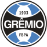
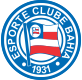
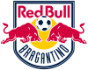
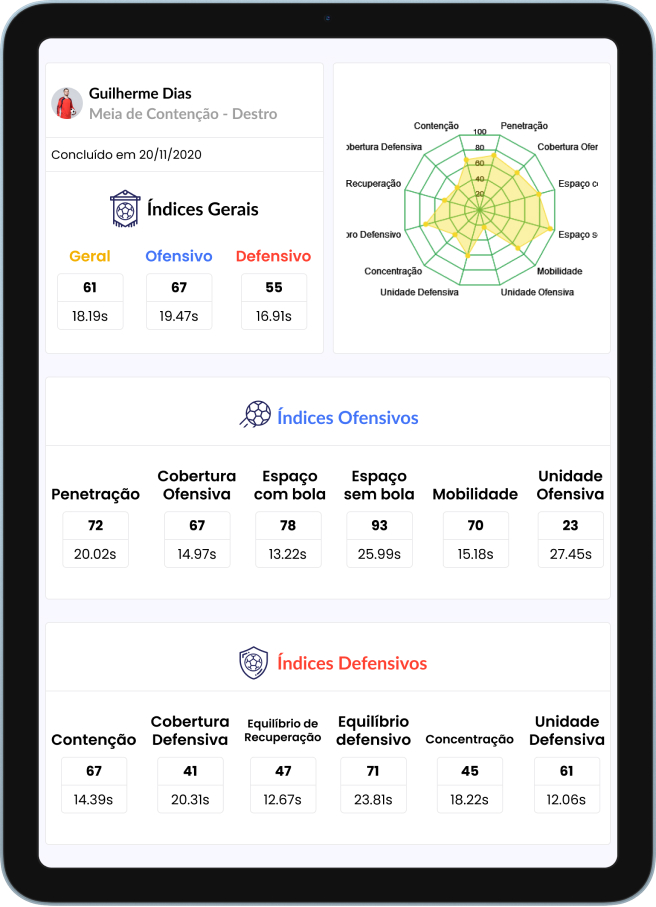

Parceiros e clientes
- 
- 
- 
Avaliação da tomada de decisão para alcançar sua melhor performance
A TacticUP é uma plataforma que permite avaliar a capacidade tática de jogadores de futebol através de um teste online.
O resultado do teste fornece informações objetivas sobre a capacidade de leitura de jogo e tomada de decisão dos jogadores.
Tenha já um relatório completo por um preço acessível!
Quero experimentarPara quem é esta plataforma?
Jogadores de Futebol
Faça o seu teste agora mesmo. Envie os resultados do seu teste para aquele time que sempre sonhou jogar. Crie um card com o seu resultado e compartilhe nas redes sociais
Escolas de Futebol
Ofereça um treinamento orientado para as necessidades individuais dos alunos. Forneça informações objetivas que qualificarão o trabalho dos seus instrutores e tenha como diferencial um feedback objetivo do rendimento dos alunos para seus responsáveis
Treinadores
Melhore seus processos através da avaliação tática do TacticUP. Qualifique a formação dos jogadores, potencialize o resultado dos treinamentos e melhore o desempenho do seu processo de seleção de jogadores
Analistas de Desempenho
Identifique as limitações e potencialidades de leitura de jogo e tomada de decisão dos jogadores e direcione as ações para a melhoria deles com mais efetividade e assertividade em suas ações
Direção Técnica
Acompanhe o desempenho das comissões técnicas para desenvolvimento dos jogadores, conheça o perfil de leitura de jogo e tomada de decisão para todas as categorias e encontre os atletas com o perfil que estão buscando para compor suas equipes
Benefícios
Tenha dados objetivos sobre a leitura de jogo e tomada de decisão cientificamente comprovados
Monitore a evolução de cada jogador e o impacto de seu desempenho no grupo
Encontre os pontos fracos de cada atleta e elabore treinos personalizados
Avalie o resultado de um jogador ou de um grupo de jogadores
Tenha acesso imediato aos relatórios após a realização dos testes
Sucesso comprovado por quem usa
Assista às entrevistas de diversos profissionais do futebol que já utilizam a ferramenta e veja como eles têm se beneficiado.
Entenda como utilizar o TacticUp
-
Cadastre-se gratuitamente na plataforma
-
Realize o teste em um computador ou tablet OBS: O tamanho mínimo da tela deve ser 10 polegadas
-
Tenha acesso gratuitamente ao seu relatório resumido
-
Pague seu relatório
-
Tenha acesso ao seu relatório completo
-
Envie os resultados do seu teste para um clube cadastrado na plataforma
Jogador
-
Cadastre seu clube gratuitamente na plataforma
-
Solicite aos jogadores que se cadastrem ou realize o cadastro deles
-
Crie as categorias ou turmas da sua instituição (ex.: sub-11) e adicione os jogadores
-
Crie a bateria encaminhando os testes aos jogadores
-
Receba os testes realizados pelos jogadores
-
Libere os testes com os créditos adquiridos
-
Acesse os relatórios individuais e coletivos dos seus atletas
Clube
Visite o canal do youtube da TacticUP para ter acesso a mais tutoriais de como utilizar a plataforma
Conheça a plataformaO melhor caminho para lapidar atletas
Nossa plataforma permite que o jogador conheça melhor e potencialize suas habilidades. Não perca tempo, faça um teste!
Experimente grátisNossa metodologia
A TacticUP avalia a capacidade de leitura de jogo e tomada de decisão de um jogador através de situações de jogo reais das principais competições de futebol do mundo. São avaliados os 12 princípios a seguir:
Princípios ofensivos
Ação de avançar com a bola para a linha de fundo ou gol, ou seja, diminuindo a distânciaentre quem está com a bola e o gol
Ação de aproximação ou distanciamento dequem está com a bola, de forma que possapermitir passar a bola com segurança,velocidade e dar ritmo de jogo (dentro docentro de jogo)
Ação de movimentação com a bola emdireção à linha lateral ou ao próprio gol, paraganhar espaço e tempo para dar sequência ao jogo
Ação de movimentação à frente da linha da bola e antes da última linha defensiva (fora do centro de jogo) de forma a permitir um passemais longo e em profundidade
Ação de movimentação nas costas da última linha de defesa
Ação de organização das linhas de ataquemantendo a unidade da equipe e permitindo jogar mais coletivamente
Princípios defensivos
Ação que visa retardar diretamente as açõesde quem está com a bola em direção ao gol
Ação de ajuda defensiva a(o) jogador(a) que realiza a contenção (retardo) à quem está com a bola
Ação de movimentar próximo e atrás da linhada bola, através de pressão em quem estácom a bola, para recuperação da posse oucobertura de eventuais linhas de passe atrásda linha da bola
Ação de movimentar em zonas do campo edar estabilidade defensiva à equipe (permitirmelhor equilíbrio defensivo)
Ações de movimentação de proteção em zonas de risco de avanço direto da equipe adversária ao gol
Ações de organização das linhas de defesa mantendo a unidade da equipe e permitindo obter mais proteção defensiva
Sugerimos que a avaliação seja refeita após 25 seções de treinamento, aproximadamente, para acompanhar o desenvolvimento dos jogadores e poder utilizar informações atualizadas para qualificação do trabalho realizado.
Mais detalhes sobre a metodologia e como interpretar os resultados estão disponíveis no e-Book:
Metodologia validada científicamente
Nupef
O NUPEF – Núcleo de Pesquisas e Estudos em Futebol da Universidade Federal de Viçosa – é a parceira oficial da TacticUP. Nosso contrato de cooperação técnica garante transferência de conhecimento e evolução constante da metodologia científica.
Veja os artigos científicos publicados sobre a metodologia científica em www.nucleofutebol.ufv.br
Professor Israel
O Professor Israel Teoldo da Costa é PhD em Ciências do Esporte pela Brunel University London, coordenador do NUPEF e da Especialização em Futebol da UFV, consultor da CBF e da CONMEBOL, autor do livro "Para um Futebol jogado com ideias", além de idealizador da metodologia da TacticUP
Nossa equipe
-
Paulo Márcio
CEO – MBA em Gestão Competitiva e 20 anos de experiência em gestão e inovação
-
Guilherme Machado
Mestre em Educação Física pela UFV, com experiência como treinador e coordenador em escolas e clubes de futebol no Brasil e exterior
-
Alessandro Teixeira
Mestrado em Ciência da Computação e 20 anos de experiência
-
Daiane de Freitas
Doutora em Ciências do Desporto pela Faculdade de Desporto da Universidade do Porto, Portugal
-
Cláudia
Graduada em Ciência da Computação pela UFV
-
Matheus
Graduando em Computação pela UFV
-
Equipe de Gestão da Cientec Aceleradora